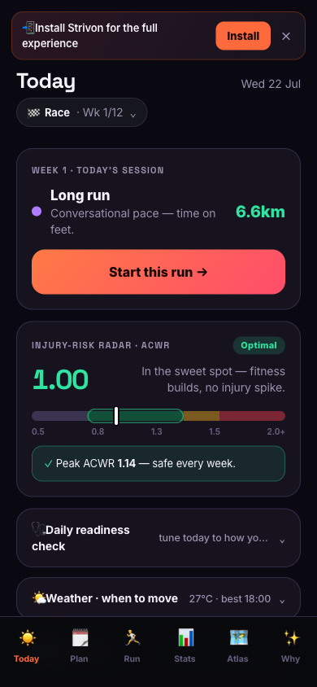

Every app records your run.
A new category
Strivon
remembers
your life.

🩹
Injury-safe plans
· ramp ≤10%/wk
🚶🏃
Walk or run
· any watch
🧠
An AI coach that
knows you
Strivon
Walk or run, your way.
strivon.run